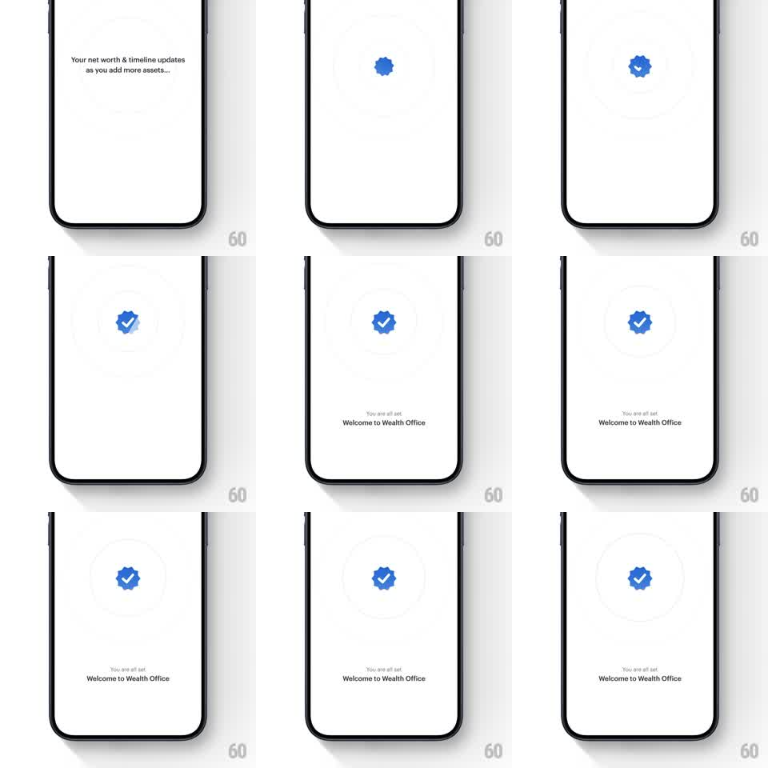

Media
Frame-by-frame

Rebuild this animation 1:1: Smallcase's setup-complete beat - the status text fades away, a blue scalloped badge springs in, a white check draws itself inside it, and the welcome line fades up.

Rebuild this animation 1:1: Smallcase's setup-complete beat - the status text fades away, a blue scalloped badge springs in, a white check draws itself inside it, and the welcome line fades up. ## Integration Integration: stack-agnostic spec - springs given as stiffness/damping, timed motions as duration + curve; map every value to your framework and animation library of choice. ## Scene Smallcase Wealth Office, white: opening copy "Your net worth & timeline updates as you add more assets..."; then the completion state - a blue scalloped (seal-edge) badge with a white check, faint concentric rings behind it, and "You are all set" / "Welcome to Wealth Office" below. ## Motion spec Pattern: springy seal-badge pop with a drawn checkmark and fading text handoff. - The opening copy fades out (250ms). - The badge pops in at center: scale 0.4 -> 1 with spring ~380/14 (clear overshoot to ~1.15), the scalloped edge staying crisp through the scale. - The white check draws on inside the badge: stroke path animated 0 -> full, 300ms, ease-out, starting at the check's short arm. - Two faint concentric rings ripple outward from the badge once (scale 1 -> 1.6, opacity -> 0, 600ms, staggered 120ms) - a soft sonar, once only. - "You are all set" fades in (200ms), then "Welcome to Wealth Office" fades up beneath it (translateY 8 -> 0, 250ms). - Settled state: the badge does one micro-bounce (scale 1 -> 1.04 -> 1, 300ms) and rests. ## Calibration - The badge is the only blue element - pure, saturated, and flat. - The whole sequence lands in under 1.5s; it's a confirmation, not a ceremony. ## Reduced motion Badge fades in (250ms); check appears with it; text crossfades (200ms). ## Don't miss - The check draws after the badge lands - never during the scale. - The scalloped edge must survive the scale as a vector, not a bitmap that softens.